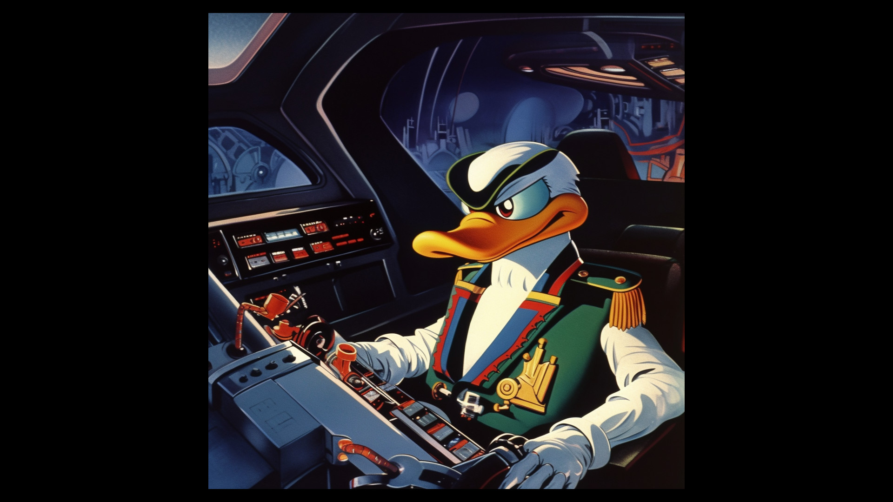

The State of MALLARD™: An Absurd Approach to Portfolio Acquisitions
In the world of finance, traditional investment strategies have long been influenced by the works of renowned economists (e.g., those who studied wealth inequality and market bubbles). However, a groundbreaking software called MALLARD™ is pushing the boundaries of portfolio acquisitions by embracing absurdity and satirical investing. The State of MALLARD™, a post-authentication system for absurd portfolio acquisitions, is still in its early stages of development but has already garnered attention for its unconventional approach.
Initially a Ruby-based terminal application, MALLARD™ has evolved into a full GUI, built using Python and a RenPy graphical wrapper. The development process involves a combination of machine learning models (LLMs) and human-aided artistry and programming. One of the key features of MALLARD™ is its use of meta-meaning to create random value assignments based on a complicated and ever-evolving questionnaire. These bizarre questions play a crucial role in satirical investing, as they contribute to the uniqueness of the process.
Historical economic textbooks from the 1980s discussed concepts like random walk methods, which highlighted the unpredictable nature of financial markets. MALLARD™ takes this idea of randomness to a whole new level of absurdity, incorporating the whimsy and madness of cartoon ducks as a key component. By referencing iconic lines from films like "Howard the Duck" and "DuckTales," MALLARD™ emphasizes the importance of embracing the unpredictable and zany elements of these characters in satirical investing.
| Current MALLARD Version | Software Used | Next Release Timetable | Current Assets With Ascribed Value |
|---|---|---|---|
| 0.2.4 | Ruby, Python, RenPy |
|
3 (LINK) |
As MALLARD™ continues to develop and expand its capabilities, it offers an exciting and fresh perspective on investing. By embracing absurdity and the chaotic nature of cartoon ducks, MALLARD™ challenges conventional financial wisdom and introduces a satirical approach to portfolio acquisitions.